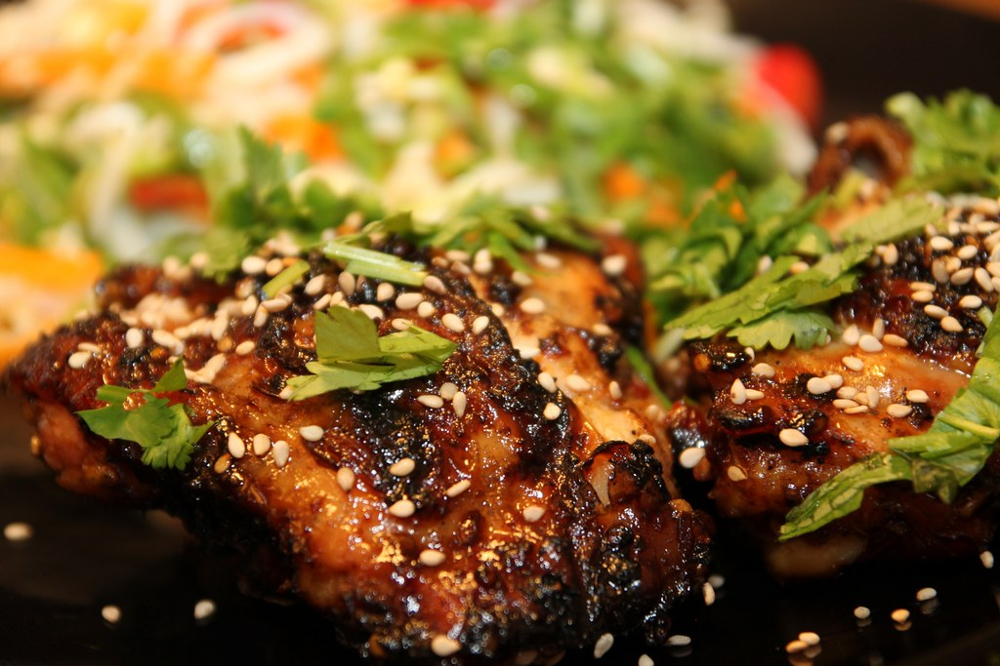

Home
Chicken Teriyaki

Description
Easy to make chicken teriyaki using chicken breast. Please prepare chicken breast using the chicken breast recipe first. Serve with fresh steamed rice and broccoli.
Ingredients
- Prepared chicken breast from the chicken breast recipe
- 4 tbsp teriyaki sauce
- 1/2 tsp sesame oil
- Brown sugar
- Fresh garlic
- Fresh ginger
Steps
- Mince the garlic and ginger.
- Set the pan to low heat, then pour the teriyaki sauce in.
- Drizzle in the sesame oil, and add brown sugar, minced garlic, and minced ginger in.
- Add chicken breast in and mix for two minutes.
- Serve with white rice and broccoli.